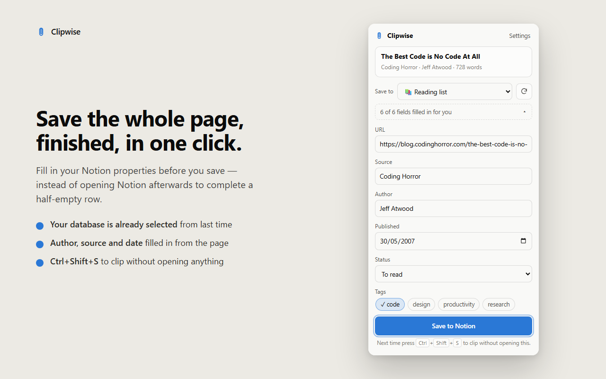
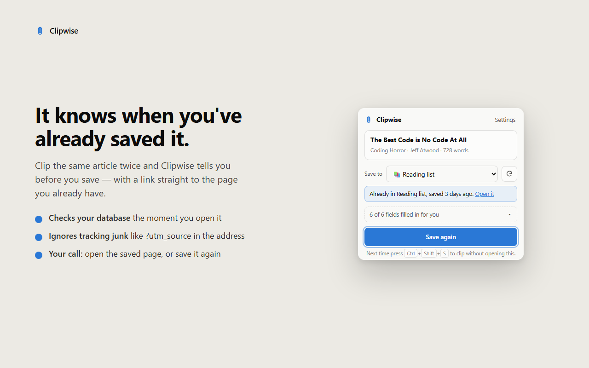
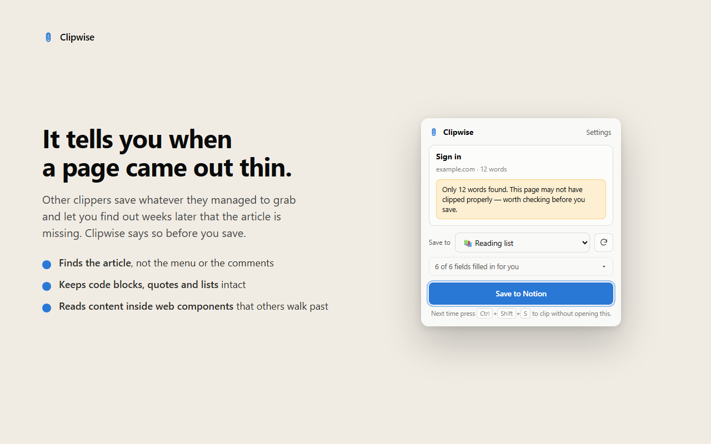

Save any page to Notion. The whole article, not half of it.
Clipwise clips web pages straight into your Notion databases — no account with us, no server in between, and nothing that ever leaves your computer.
One button, and the page arrives in Notion finished
Nothing saved yet. Press the button.
Built for the parts of clipping that usually go wrong
It finds the actual article
Menus, sidebars, cookie banners and comment sections stay behind. Links stay clickable, bold stays bold, and code blocks, quotes, lists and images come along.
reads inside web components and lazy-loaded images
Properties filled in before saving
Author, source and publication date are picked up from the page. Pick a status and tags in the popup, and the page lands in Notion finished instead of as a row to clean up later.
remembers your usual database and values
It knows what you already saved
Open an article that's already in your database and Clipwise links you straight to the page you have, instead of quietly making a second one.
?utm_source, fbclid, gclid and friends are ignored
It says when a page is thin
If a page yields almost no text, Clipwise tells you before saving — so you don't find an empty page in your database three weeks later.
plain-language errors, never a red exclamation mark
One shortcut for the rest
Pages you just want kept go straight to your last database without anything opening at all.
Ctrl+Shift+S — Cmd+Shift+S on a Mac
Set up in about two minutes
A short guide opens after installing and checks off each step as you finish it. No account to create, because there's nothing to create it with.
works with your own Notion integration secret
What it looks like while you use it

Choose the database, set status and tags, and save. The second clip takes one click.

Already saved? You get a link to the page you have, not a duplicate.

A page with almost no text says so before it goes anywhere.
There is no server to trust, because there is no server
Most clippers ask you to sign in with them first, which means your pages travel through someone else's machine. Clipwise talks to one host and one host only.
- ×No account, no login, no email address.
- ×No analytics, telemetry or crash reporting inside the extension.
- ×Nothing runs on a page until you click the icon or press the shortcut.
- ×Your Notion secret stays on your computer and is sent only to Notion.
- ×Clipping stays free. It will never sit behind a paywall.
Three steps, once
Create an integration
At notion.so/my-integrations, make an internal integration and copy the secret that starts with ntn_.
Paste it into Clipwise
The setup guide opens by itself after installing. Paste the secret there — it goes no further than your own browser.
Share a database with it
In Notion, open the database you clip into, choose ··· › Connections and add the integration. That's it.
The things people ask first
Is it really free?
Yes, and clipping stays free. If a paid tier ever arrives it will be for things like templates and automation — never for saving a page, because that's the whole point of the extension.
Why do I need a Notion integration secret?
It's how Notion lets a tool write into your workspace without a middleman. Other clippers avoid that step by putting their own account and server in between. This way the connection is yours, and you can revoke it in Notion at any time.
What about Firefox, Safari or mobile?
Chrome and Chromium browsers (Edge, Brave, Arc) today. Firefox and Safari need their own store listings, which is more work than it sounds, so they're not promised yet.
Which pages does it struggle with?
Pages built entirely out of images, and sites that load their article only after you scroll. If you find one that comes through wrong, that's the most useful thing you can send me — most fixes in version 0.2 started as exactly that kind of report.
Who makes this?
One person: Roan, a developer in the Netherlands. Clipwise started because every clipper I tried wanted an account before it would talk to my own Notion.